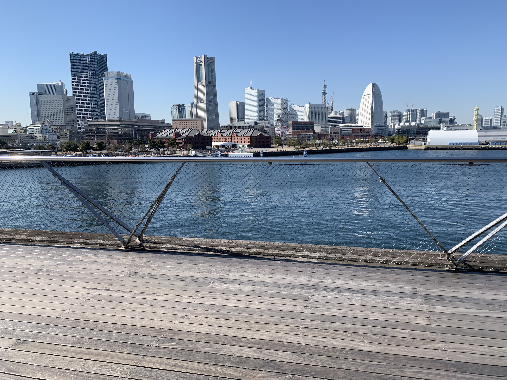
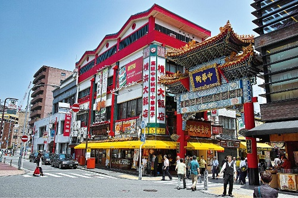
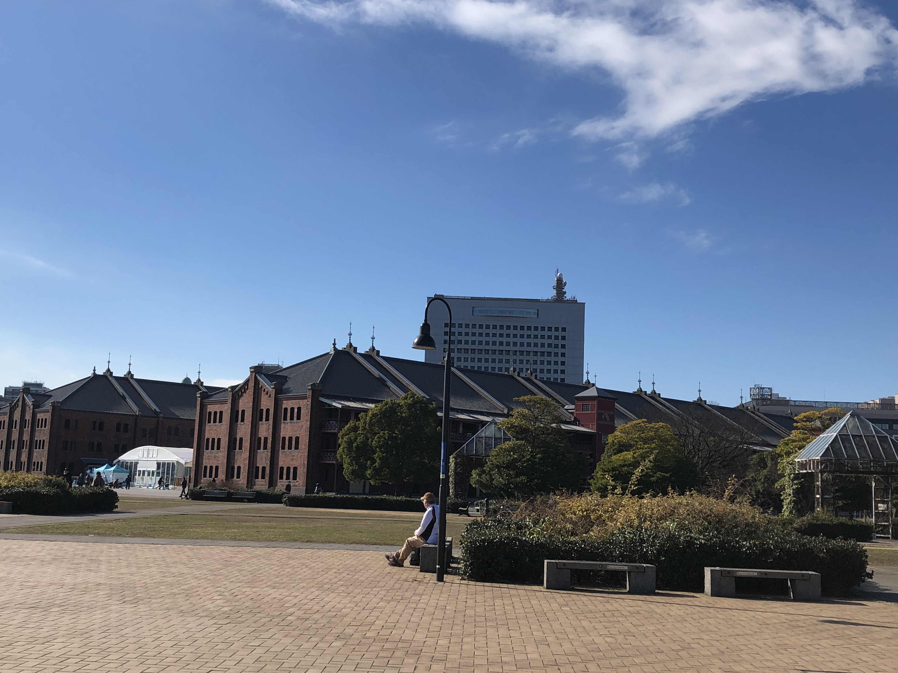

みなさん、こんにちは。管理人の金杉です。
いきなりですが、みなさんは「横浜」と聞いてどこを思い浮かべますか？
「ランドマークタワー」や「赤レンガ」…色々出てくることだろうと思います。
正直、どこに行ったらいいのか、迷うことだろうと思います。
そこで今回、一応ハマッ子である私がどこに行けばいいのか教えちゃいます！！
遊びに行く時の参考にしてみてください✨
海からやってくる風で心も浄化！気分転換にはおすすめの「大桟橋」
まず一つ目は、「大桟橋」です。毎年300万人以上の人が訪れる有名な観光地の一つ。赤レンガをはじめとする観光名所を一望することが可能です。
下の写真は、私が実際に行ったときに撮影したものです。
特に屋上では、ウッドデッキと芝地が広がる、公園のような広々とした空間となっており、場内は自由に散策や休憩ができます。
大さん橋は横浜開港以来、「海の玄関口」として130年以上の歴史を誇り、長年、日本の貿易・交通をリードしてきた横浜港の象徴的存在です。
6度の増改築を経て現在の姿となり、現ターミナルは2002年に完成して7代目となっています。
またこのデザインは、国内最大の国際デザインコンペで最優秀作品から選定したものだったそうです。

アクセス：
・みなとみらい線「日本大通り駅」下車 徒歩7分（3番または4番出口）
・横浜市営地下鉄「関内駅」下車 徒歩15分（1番出口）
・JR「関内駅」下車 徒歩15分（南口）
横浜といったらまずはここ！「中華街」
二つ目は、「中華街」です。
横浜中華街は開港後、西洋人とともに一緒に来た中国人の外商が商売を始め、その後増加する中国人とともに次第に形成されていきました。
世界最大級の規模を誇る横浜中華街には、約600軒以上もの店があり、中華街の至るところで個性的な門があります。

アクセス：
・みなとみらい線「日本大通り駅」下車 徒歩5分
・横浜市営地下鉄「関内駅」下車 徒歩7分
買い物も休憩も！「赤レンガ倉庫」
三つ目は、「赤レンガ倉庫」。
横浜赤レンガ倉庫は、明治/大正の煉瓦造建築が人気の横浜を代表する観光スポットの一つです。
明治末期から大正初期にかけて国の模範倉庫として建設されたレンガ造りの歴史的建造物です。
周辺にはたくさんの木がある公園が広がっており、安らぎの場としてもおすすめです。
夜になると昼間とは異なり、ライトアップがされ、幻想的な雰囲気へと一変します。
また、横浜ベイブリッジや大さん橋、ランドマークタワーなど観光名所を楽しむことができます。

アクセス：
・JR・市営地下鉄「桜木町駅」より汽車道経由で徒歩約15分
・市営地下鉄「関内駅」より徒歩約15分
・みなとみらい線「馬車道駅」または「日本大通り駅」より徒歩約6分
・みなとみらい線「みなとみらい駅」より徒歩約12分
いかがだったでしょうか。
多くの人がTVなどでみたことがあったものだと思います。
ネットワーク情報学部の学生のみなさんは毎日課題に追われていて大変ですよね。
たまには気分転換に横浜の街を歩いて気分転換しちゃってください！
出典：